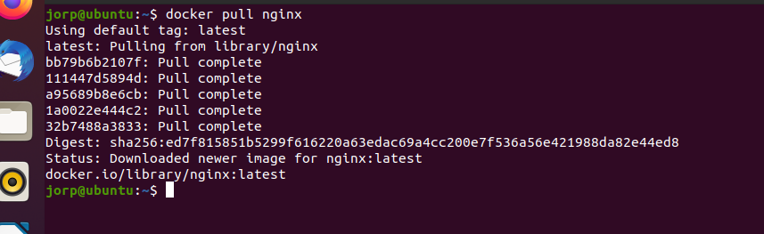

It’s very easy to get a basic web server up in running in few minutes with Docker. In this tutorial,
we’re going to use nginx as our web server implementation and show you how to mount a locally created
directory containing an index.html file, to your running nginx Docker container. In this example, the
root of our project is: ~/ which can also be expressed as /home/$USER/ or
simply: $HOME
Pull down the latest nginx image from Docker Hub.

Create a local directory named nginx-demo, containing a subdirectory html,
resulting in ~/nginx-demo/html.
$ mkdir -p ~/nginx-demo/html
Place any plaintext or html into a file named index.html. This location of this file will
be ~/nginx-demo/html/index.html.
In this example, I'm using the echo utility of the Bash shell, but you can use any terminal
or GUI-based text editor you're comfortable with.
Use the nginx image downloaded in the first step to create a container named nginx-demo.
--name: assign a name to a container
-p 80:80: bind port 80 of the container to TCP port 80 on localhost
-d: detach the container from the terminal session and run it in the background
-v: bind mount a local directory to directory within the container
Finally, verify that our web server container is running correctly by either issuing the curl
command inside your terminal, or by navigating to http://localhost in your web browser.